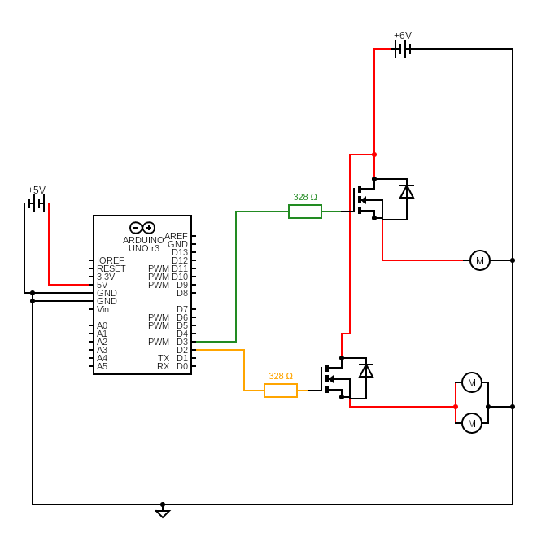
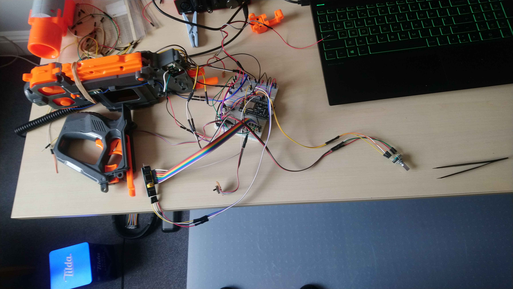
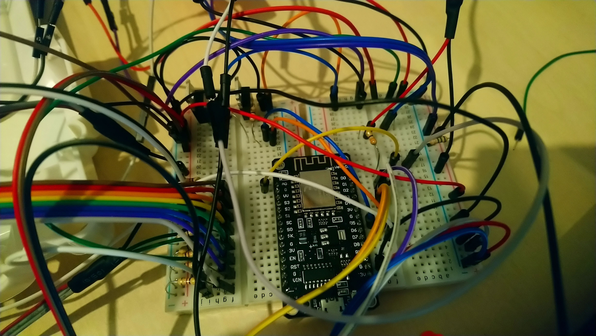
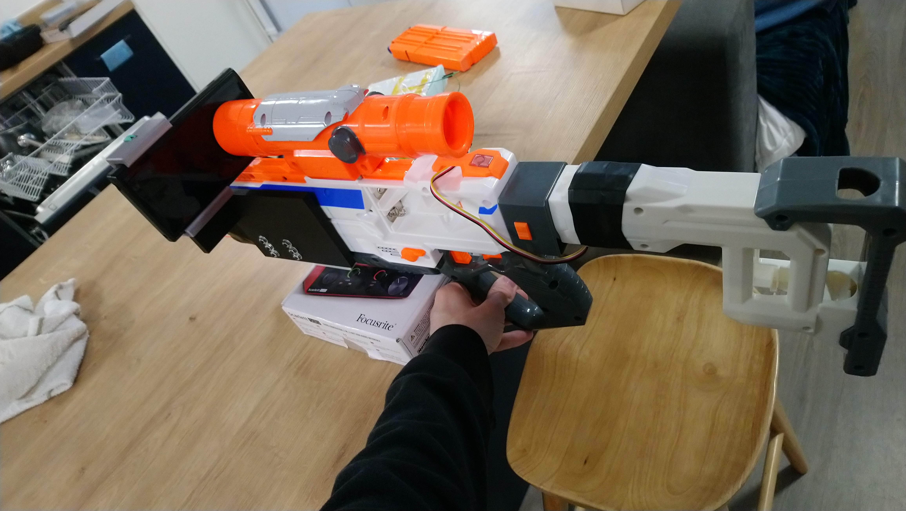

The nerfgun is probably my favourite project from university, its very nicely contained and the most fun of the all the projects for as wide an audience as possible.
The project started from the 1st year brief for building a game controller using an arduino uno and making a game desgined for it. The brief was pretty open in what we could do. Most people really didnt like this project because it involved doing eletronics, but eletronics is the first thing I was really good at before I worked out how to program, so I was excited at being able to mesh the two skills together.
I had the idea since basically starting uni that I could create a shooting AR/VR game using a nerfgun and a phone, the concept being that the player uses the nerfgun to aim a virtual alagory in a game world and they could press a real trigger to fire the in game gun.
Initially I planned to use a phones's internal gyroscope and accelorameter for aiming but it lacked the fine precision and also had the disadvange of being far from the center of rotation - which made aiming awkward. The solution was to use an external gyroscope and accelorameter attached the the butt of the gun as close as possible to the center of rotation.
Reverse Engineering
The nerfgun I ended up purchasing ended up being an eletric gun quite by accident. This gun used three eletric motors to fire nerfdarts. Two are used to spin up fly wheels to accelerate the darts, one is used to push a dart into the fly wheels.
The little pcb contains two small mosfets (eletric switch) for switching the motors on and off and takes in all the interlock and trigger inputs. Now, the easiest thing to do would have been to gut the gun and just feed the trigger switch to an arduino that talks to the phone game, but that is lame and boring.
I decided to allow the gun to still work, I thought it would be simple to replicate the guns features using an arduino and also be able to send state information to the game, allowing the gun to fire for real when fired in game, but also to have a simple toggle to only firing in game and not for real.
And yes, it was quite simple to reverse engineer and replicate the functionality with an arduino. The most complicated part was working out a circuit to interpret the ammo detector LED - which was a simple potential divider.
Everything else could be interrepted as "digital inputs" - its either on or off, for the interlock switch and the rate of fire switch.
Prototyping the Nerfgun Control
Next I moved to prototyping the nerfgun, starting with switching the motors. I got some mosfets and made a test circuit switch turned two leds+resistors on and off.

Next I ran into a problem with the other inputs and outputs - The ESP8266 micro controller I was using did not have enough I/O pins for what I needed, however i/o boards exist so I got myself a PCF8574 i2c i/o expander and ended up with this final circuit diagram.
Note the rotary encoder (SW1) did not end up being used in the project due to time constraits. The encoder I wanted to use to zoom the sniper scope in and out.
Annoyingly the PCF8574 does not have pull-up/down resistors for its i/o pins so I ended up having to add 4.7k resistsors to ground. And at this point we arrive a the breadboard physical prototype of everything which is very ugly and complicated. So much so I needed two breadboards!


But it works, the breadboard detects nerfdarts, spins up the fly wheels and can fire them - even if the video showing it is terrible.
Turning it into a PCB
Now that I knew the thing will work I needed to make it more managable and less take up a whole table. A PCB is the answer, or at as far as I go here - some prototyping board.
Now with the nerfgun reassmbelled, I got Ben from robotics to drill a hole (cos students arent allow drills) in it for me to pass wires through, then I taped the pcb on and plugged everything in.
Is it janky? yes. Did it work? also yes. I lated moved to a more slightly more permanant cardboard box and then to still to this day lego mount.
The game and motion
Till now I have focused on the hardware and turning the perfectly working nerfgun into the same thing but with a huge chunk of wires and pcbs on the side. The reason for that is the hardware is much more interesting, the game is very simple.

The player is stationary in a room, there is a far wall with targets that appear on it, and targets that raise from the floor. you have a green laser beam aiming sight and some statistics about how well you hit the tragets.
You have two cameras, one focused down the nerfguns sniper scope and that you have to phyiscally look down on the real thing, and one shows a wider view to the right of the scope - where most of the phone screen ends up being visible.
Comms with the gun is done over wifi using UDP listeners and senders. The ESP8266 micro controller host a wifi network the phone connects to.
Below is a demo of the game and also the testing of the gyroscope accelorameter I ended up using - I ended up trying like 4 different ones before finding one that worked well enough.
You also see the addition of 3d printer attachments used to attach the phone to the nerfgun in some pictures, but beyond that this was really the whole project.
We had to record a video demoing the controller incase we could not get it to work on the day, which is convient for me now.
I dont think there is any code worth highlighing, but the repo is publicly accessible for those curious. The deployed arduino sketch is badly named so here is a link. Yes the wifi password for the hosted network is in plaintext and is also 12345678, I couldnt work out how to configure an open network/no password network in the time I had - yes I got flamed for this during the assessment viva. In my defence - nearly every arduino sketch with wifi I have seen also does this.